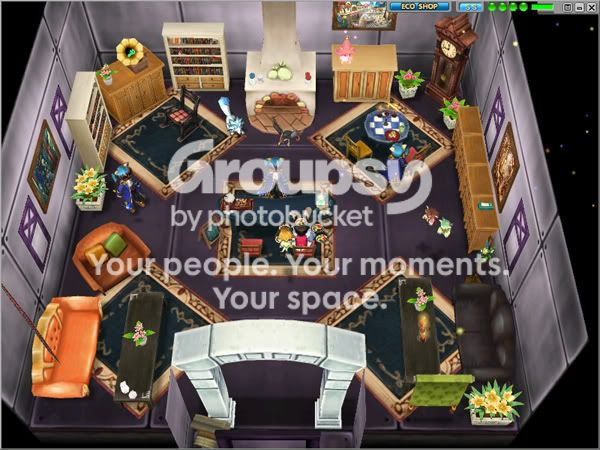
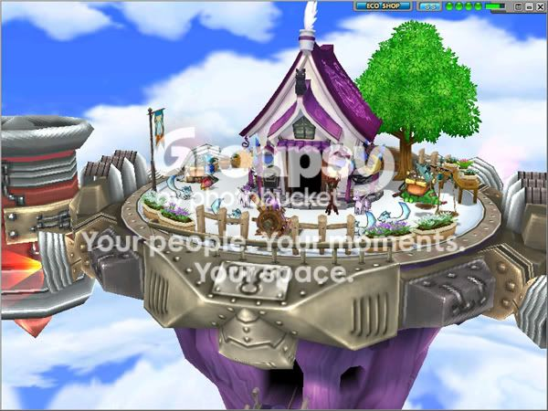
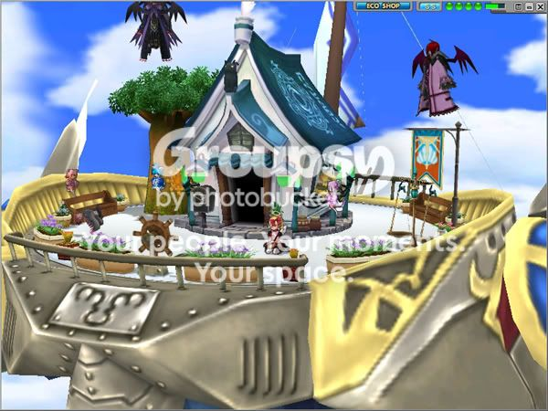
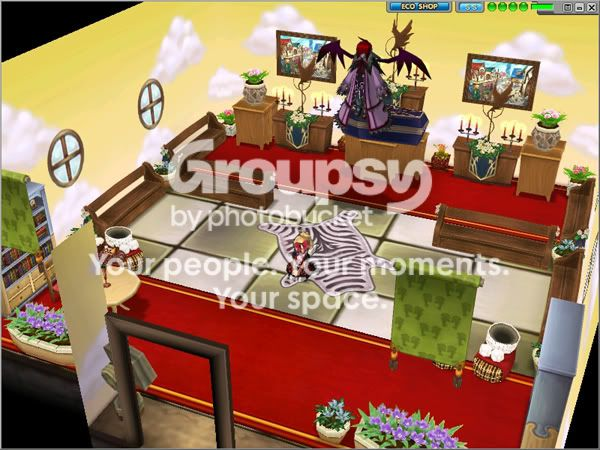
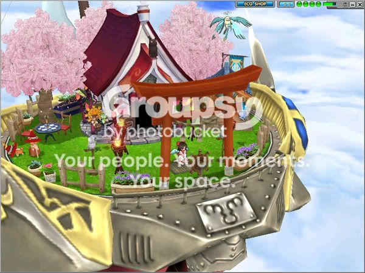
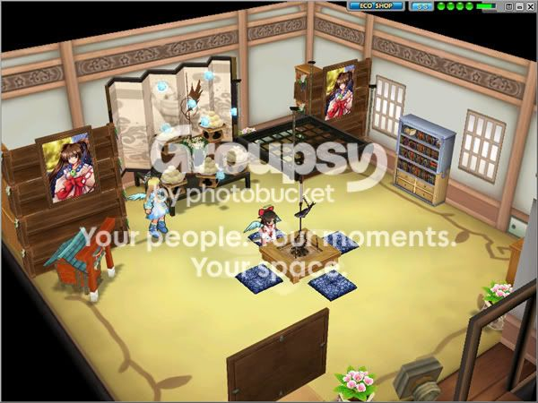
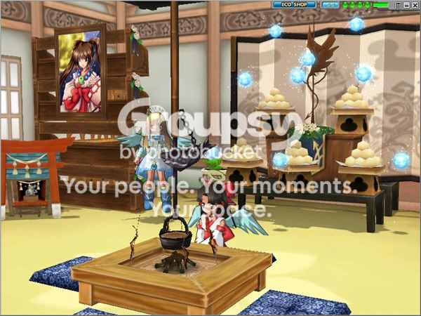

Clocking มั้ง

มี 4 หลัง
http://eco.froztic.in.th/archive/ecofanclub/
http://eco.froztic.in.th/archive/ecofanclub/viewtopic.php?f=26&t=39854












Rouen เขียน:บ้านเมจิกกกกกก หาจากไหนเยอะแยะเนี้ยยย ช่วงนี้หาซื้อม่ายด้ายเลย TT